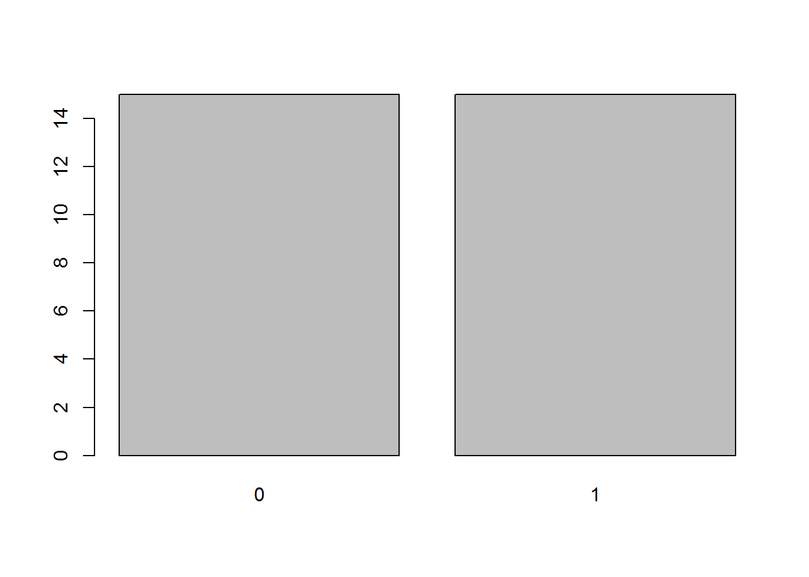
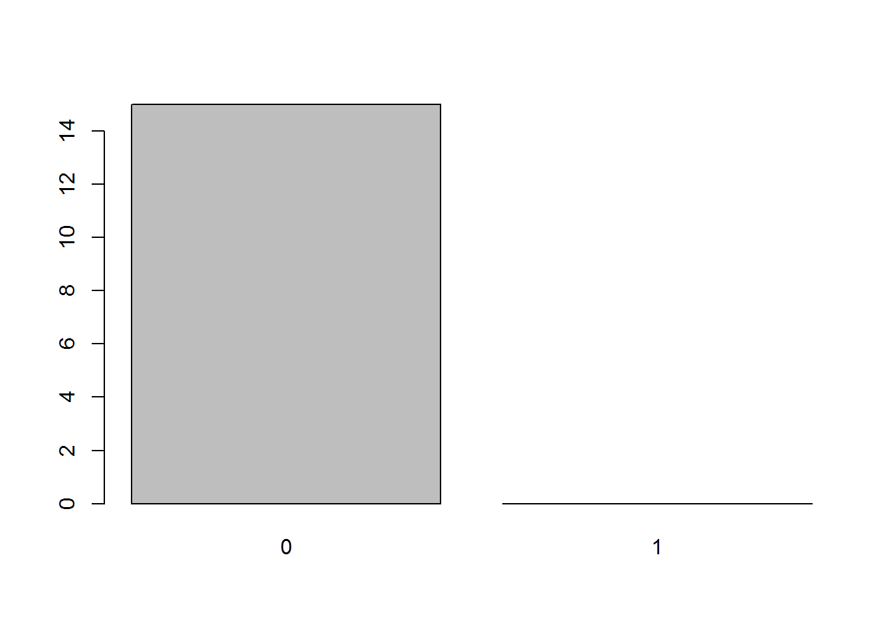

We appreciate that the first contact with R might feel a little overwhelming, especially if you haven’t done any programming before. Some things are fairly easy to understand but others do not come naturally to people. To help you with the latter group, here are some tips on how to approach talking to computers.
We keep telling you to try and use the script editor window for writing and running code instead of the console. There is a good reason for this. If you write a command and it doesn’t do exactly what you wanted to do, you can quickly tweak it in the editor and run it again. Also, if you accidentally modify and object and mess everything up, you can just re-run your entire script up to that point and pretend nothing ever happened. Or different still, let’s say you analysed your data and wrote your report and then you realised you made a mistake, for instance forgot to exclude data you should have excluded or excluded some you shouldn’t have. Without a “paper-trail” of your analysis, this is a very unpleasant (but, sadly, not unheard of) experience. But with a saved analysis script, you can just insert an additional piece of code in the file, re-run it and laugh it off. Or do the first two, and then take a long hard look at yourself! Whatever the case, using the script editor is just very, very useful!
However, the aim is to keep the script tidy. You don’t need to put every single line of code you ever run into it. Sometimes, you just want to look at your data, using, for example View(df). This kind of command really doesn’t need to be in your script. As a general rule of thumb, use the editor for code that adds something of value to the sequence of the script (data cleaning, analysis, code generating plots, tables, etc.) and the console for one-off commands (when you want to just check something).
Here is an example of what a neat script looks like (part of the Reproducibility Project: Psychology analysis1). Compare it to your own scripts and try to find ways of improving your coding.
For useful “good practice” guidance on how to write legible code, see the Google style guide.
Talking to a computer is like talking to Sheldon Cooper (of The Big Bang Theory fame): he is a highly proficient user of the English language: he understands the vocab, grammar, and syntax perfectly well. Since he is very smart, he can do many complex things you ask him to do, so long as you are formal, logical, precise, and unambiguous. If you are not, he won’t be able to help you or worse, will do something wrong. When it comes to the pragmatics of English, he’s a bit lost: he doesn’t understand metaphors, shorthand, or sarcasm. If you want to tell jokes, you’d be better off talking to someone else.
Keep this analogy in mind whenever you’re working with R. Talk to it as you would talk to Sheldon: don’t take anything for granted, don’t rely on R to make any assumptions about what you are telling it. Certainly don’t try to be funny and expect R to appreciate it! It takes a little practice to get into the habit of translating what you want to do into the dry, formal language of logic and algorithms but, on the flip side, once you get the knack of it, there will never be any misunderstanding on the part of the machine. With people, there will always be miscommunication, no matter how clear you try to be, because people are very sensitive to paralinguistic cues, non-verbal communication, and the pragmatics of a language. Computers don’t care about any of that and thus, if they’re not doing what you want them to, the problem is in the sender, not the receiver.2 That is exactly why they’re built like that!
Instead of thinking about computers as scary, abstruse, or boring, learn to appreciate this quality of precision as beautiful. That way, you’ll get much more enjoyment out of working with them.
R programmingThe previous section wasn’t meant to be an empty lead in for what’s coming next. Think back to the CoopR analogy when you read about the following core principles of working with R.
By algorithmically, we mean in a precise step-by-step fashion where each action is equivalent to the smallest possible increment. So, if you want a machine to make you a cup of tea, instead of saying: “Oi CoopR! Fetch me a cuppa!”, you need to break everything down. Something like this:
Go to kitchenIf no kitchen, jump to 53Else get kettleIf no kettle, jump to 53Check how much water in kettleIf is more or equal than 500 ml of water in kettle, jump to 15Place kettle under cold tapOpen kettle lidTurn cold tap onCheck how much water in kettleIf there is more than 500 ml of water in kettle, jump to 13Jump to 10Turn cold tap offClose kettle lidIf kettle is on base, jump to 17Place kettle on baseIf base is plugged in mains, jump to 19Plug base in mainsTurn kettle onGet cupIf no cup, jump to 53Get tea bag # yeah, we’re not poshIf no tea bag, jump to 53Put tea bag in cupIf kettle has boiled, jump to 27Jump to 25Start pouring water from kettle to cupCheck how much water in cupIf there is more than 225 ml of water in cup, jump to 31Jump to 28Stop pouring water from kettleReturn kettle on baseWait 4 minutesRemove tea bag from cupPlace tea bag by edge of sink # this is obviously your flatmate’s programOpen fridgeSearch fridgeIf full fat milk is not in fridge, jump to 41Get full fat milk # full fat should be any sensible person’s top choice. True fact!Jump to 43If semi-skimmed milk is not in fridge, jump to 51 # skimmed is not even an option!Get semi-skimmed milkTake lid of milkStart pouring milk in cupCheck how much liquid in cupIf more or equal to 250 ml liquid in cup, jump to 48Jump to 45Stop pouring milkPut lid on milkReturn milk to fridgeClose fridge # yes, we kept it open! Fewer steps (I’m not lazy, I’m optimised!)Bring cup # no need to stirFinish… so there you go, a nice cuppa in 53 easy steps!
Obviously, this is not real code but something called pseudocode: a program-like set of instructions expressed in a more-or-less natural language. Surely, we could get even more detailed, e.g., by specifying what kind of tea we want, but 53 steps is plenty. Notice, however, that, just like in actual code, the entire process is expressed in a sequential manner. This sometimes means that you need to think about how to say things that would be very easy to communicate to a person (e.g., “Wait till the kettle boils”) in terms of well-defined repeatable steps. In our example, this is done with a loop:
If kettle has boiled, jump to 27Jump to 25Start pouring water from kettle to cup
The program will check if the kettle has boiled and, if it has, it will start pouring water into the cup. If it hasn’t boiled, it will jump back to 25. and check again if it has boiled. This is equivalent to saying “wait till the kettle boils”.
Note that in actual R code, certain expressions, such as jump to (or, more frequently in some older programming languages goto) are not used so you would have to find other ways around the problem, were you to write a tea-making program in R. However, this example illustrates the sort of thinking mode you need to get into when talking to computers.
To demonstrate this point on an actual programming example that will be familiar to you, let’s think about how to conceptually ask R to replace every value in column 1 of matrix mat that is more than 2 standard deviations above the mean with NAs. In a step-by-step fashion, we would ask:
Calculate mean of column 1 of mat and store in m_mat1Calculate standard deviation of column 1 of mat and store in sd_mat1Calculate m_mat1 plus twice sd_mat1 and store in valueCompare each number in column 1 of mat against value and return TRUE if that element is larger than value and FALSE otherwise. Store this chain of TRUEs and FALSEs into conditionTake all elements of column 1 of mat that correspond to TRUEs in condition and assign NA to themIn actual R code, this algorithm corresponds to:
# step 1
m_mat1 <- mean(mat[ , 1]) # the indexing is saying [-all rows-, column 1]
# step 2
sd_mat1 <- sd(mat[ , 1])
# step 3
value <- m_mat1 + 2 * sd_mat1
# step 4
condition <- mat[ , 1] > value
# step 5
mat[condition, 1] <- NA
And yes, you can ram all of the above into a single line of code, such as
mat[mat[ , 1] > mean(mat[ , 1]) + 2 * sd(mat[ , 1]), 1]but before you get to the stage where that becomes second nature and you are confident that you won’t miss out any []s, ()s, ,s, or 1s, it might be a good idea to do things in sequence. That way, you will teach yourself to think algorithmically about programming tasks.
Everything in life is merely transient; we ourselves are pretty ephemeral beings. (#sodeepbro) However, R takes this quality and runs with it. If you ask R to perform any operation, it will spew it out into the console and immediately forget it ever happened. Let’s show you what that means:
# create an object a and assign it the value of 1
a <- 1
# increment a by 1
a + 1## [1] 2# OK, now see what the value of a is
a## [1] 1
So, R as if forgot we asked it to do a + 1 and didn’t change its value. The only way to keep this new value is to put it in an object.
b <- a + 1
# now let's see
b## [1] 2
Think of objects as boxes. The names of the objects are only labels. Just like with boxes, it is convenient to label boxes in a way that is indicative of their contents, but the label itself does not determine the content. Sure, you can create an R object called one and store the value of 2 in it, if you wish. But you might want to think about whether or not it is a helpful name. And what kind of person that makes you… Objects can contain anything at all: values, vectors, matrices, data, graphs, tables, even code. In fact, every time you call a function, e.g., mean(), you are running the code that’s inside the object mean with whatever values you pass to the arguments of the function.
Let’s demonstrate this last point:
# let's create a vector of numbers the mean of which I want to calculate
vec <- c(103, 1, 1, 6, 3, 43, 2, 23, 7, 1)
# see what's inside
vec## [1] 103 1 1 6 3 43 2 23 7 1# let's get the mean
# mean is the sum of all values divided by the number of values
sum(vec)/length(vec)## [1] 19# good, now let's create a function that calculates
# the mean of whatever we ask it to
function(x) {sum(x)/length(x)}## function(x) {sum(x)/length(x)}# but as we discussed above, R immediately forgot about the function
# so we need to store it in a box (object) to keep it for later!
calc.mean <- function(x) {sum(x)/length(x)}
# OK, all ready now
calc.mean(x = vec)## [1] 19# the code inside the object calc.mean is reusable
calc.mean(x = c(3, 5, 53, 111))## [1] 43# to show that calc.mean is just an object with some code in it,
# you can look inside, just like with any other object
calc.mean## function(x) {sum(x)/length(x)}
## <bytecode: 0x0000000009a057d8>
Let this be your mantra: “If I want to keep it for later, I need to put it in an object so that is doesn’t go off.”
Unlike in the physical world, objects in R cannot truly change. The reason is that, sticking to our analogy, these objects are kind of like boxes. You can put stuff in, take stuff out and that’s pretty much it. However, unlike boxes, when you take stuff out of objects, you only take out a copy of its contents. The original contents of the box remain intact. Of course you can do whatever you want (within limits) to the stuff once you’ve taken it out of the box but you are only modifying the copy. And unless you put that modified stuff into a box, R will forget about it as soon as it’s done with it. Now, as you probably know, you can call the boxes whatever you want (again, within certain limits). What might not have occurred to you though, is that you can call the new box the same as the old one. When that happens, R basically takes the label off the old box, pastes it on the new one and burns the old box. So even though some operations in R may look like they change objects, under the hood R copies their content, modifies it, stores the result in a different object puts the same label on it and discards the original object. Understanding this mechanism will make things much easier!
Putting the above into practice, this is how you “change” an R object:
# put 1 into an object (box) called a
a <- 1
# copy the content of a, add 1 to it and store it in an object b
b <- a + 1
# copy what's inside b and put it in a new object called a
# discarding the old object a
a <- b
# now see what's inside of a
# (by copying its content and pasting it in the console)
a## [1] 2
Of course, you can just cut out the middleman (object b). So to increment a by another 1, we can do:
a <- a + 1
a## [1] 3
When it comes to data, every vector, matrix, list, data frame - in other words, every structure - is composed of elements. An element is a single number, boolean (TRUE/FALSE), or a character string (anything in “quotes”). Elements come in several classes:
"numeric", as the name suggests, a numeric element is a single number: 1, 2, -725, 3.14159265, etc.. A numeric element is never in ‘single’ or “double” quotes! Numbers are cool because you can do a lot of maths (and stats!) with them.
"character", a string of characters, no matter how long. It can be a single letter, 'g', but it can equally well be a sentence, "Elen síla lumenn' omentielvo." (if you want the string to contain any single quotes, use double quotes to surround the string with and vice versa). Notice that character strings in R are always in ‘single’ or “double” quotes. Conversely anything in quotes is a character string:
class(3)## [1] "numeric"class("3") # in quotes, therefore character!## [1] "character"It stands to reason that you can’t do any maths with cahracter strings, not even if it’s a number that’s inside the quotes!
"3" + "2"## Error in "3" + "2": non-numeric argument to binary operator
"logical", a logical element can take one of two values, TRUE or FALSE. Logicals are usually the output of logical operations (anything that can be phrased as a yes/no question, e.g., is x equal to y?). In formal logic, TRUE is represented as 1 and FALSE as 0. This is also the case in R:
# recall that c() is used to bind elements into a vector
# (that's just a fancy term for an ordered group of elements)
class(c(TRUE, FALSE))## [1] "logical"# we can force ('coerce', in R jargon) the vector to be numeric
as.numeric(c(TRUE, FALSE))## [1] 1 0This has interesting implications. First, is you have a logical vector of many TRUEs and FALSEs, you can quickly count the number of TRUEs by just taking the sum of the vector:
# consider vector of 50 logicals
x## [1] TRUE FALSE FALSE TRUE TRUE FALSE TRUE TRUE FALSE TRUE FALSE
## [12] TRUE TRUE FALSE TRUE FALSE FALSE TRUE TRUE TRUE TRUE FALSE
## [23] TRUE TRUE TRUE TRUE TRUE FALSE FALSE FALSE FALSE TRUE TRUE
## [34] TRUE FALSE TRUE TRUE FALSE FALSE FALSE TRUE TRUE TRUE TRUE
## [45] FALSE TRUE FALSE FALSE TRUE TRUE# number of TRUEs
sum(x)## [1] 30# number of FALSEs is 50 minus number of TRUEs
length(x) - sum(x)## [1] 20Second, you can perform all sorts of arithmetic operations on logicals:
# TRUE/FALSE can be shortened to T/F
T + T## [1] 2F - T## [1] -1(T * T) + F## [1] 1Third, you can coerce numeric elements to valid logicals:
# zero is FALSE
as.logical(0)## [1] FALSE# everything else is TRUE
as.logical(c(-1, 1, 12, -231.3525))## [1] TRUE TRUE TRUE TRUENow, you may wonder that use this can possible be?! Well, this way you can perform basic logical operations, such as AND, OR, and XOR (see section “Handy functions that return logicals” below):
# x * y is equivalent to x AND y
as.logical(T * T)## [1] TRUEas.logical(T * F)## [1] FALSEas.logical(F * T)## [1] FALSEas.logical(F * F)## [1] FALSE# x + y is equivalent to x OR y
as.logical(T + T)## [1] TRUEas.logical(T + F)## [1] TRUEas.logical(F + T)## [1] TRUEas.logical(F + F)## [1] FALSE# x - y is equivalent to x XOR y (eXclusive OR, either-or)
as.logical(T - T)## [1] FALSEas.logical(T - F)## [1] TRUEas.logical(F - T)## [1] TRUEas.logical(F - F)## [1] FALSE
"factor", factors are a bit weird. They are used mainly for telling R that a vector represents a categorical variable. For instance, you can be comparing two groups, treatment and control.
# create a vector of 15 "control"s and 15 "treatment"s
x <- rep(c("control", "treatment"), each = 15)
x## [1] "control" "control" "control" "control" "control"
## [6] "control" "control" "control" "control" "control"
## [11] "control" "control" "control" "control" "control"
## [16] "treatment" "treatment" "treatment" "treatment" "treatment"
## [21] "treatment" "treatment" "treatment" "treatment" "treatment"
## [26] "treatment" "treatment" "treatment" "treatment" "treatment"# turn x into a factor
x <- as.factor(x)
x## [1] control control control control control control control
## [8] control control control control control control control
## [15] control treatment treatment treatment treatment treatment treatment
## [22] treatment treatment treatment treatment treatment treatment treatment
## [29] treatment treatment
## Levels: control treatmentThe first thing to notice is the line under the last printout that says “Levels: control treatment”. This informs you that x is now a factor with two levels (or, a categorical variable with two categories).
Second thing you should take note of is that the words control and treatment don’t have quotes around them. This is another way R uses to tell you this is a factor.
With factors, it is important to understand how they are represented in R. Despite, what they look like, under the hood, they are numbers. A one-level factor is a vector of 1s, a two-level factor is a vector of 1s and 2s, a n-level factor is a vector of 1s, 2s, 3s … ns. The levels, in our case control and treatment, are just labels attached to the 1s and 2s. Let’s demonstrate this:
typeof(x)## [1] "integer"# integer is fancy for "whole number"
# we can coerce factors to numeric, thus stripping the labels
as.numeric(x)## [1] 1 1 1 1 1 1 1 1 1 1 1 1 1 1 1 2 2 2 2 2 2 2 2 2 2 2 2 2 2 2# see the labels
levels(x)## [1] "control" "treatment"The labels attached to the numbers in a factor can be whatever. Let’s say that in your raw data file, treatment group is coded as 1 and control group is coded as 0.
# create a vector of 15 zeros and 15 ones
x <- rep(0:1, each = 15)
x## [1] 0 0 0 0 0 0 0 0 0 0 0 0 0 0 0 1 1 1 1 1 1 1 1 1 1 1 1 1 1 1# turn x into a factor
x <- as.factor(x)
x## [1] 0 0 0 0 0 0 0 0 0 0 0 0 0 0 0 1 1 1 1 1 1 1 1 1 1 1 1 1 1 1
## Levels: 0 1Since x is now a factor with levels 0 and 1, we know that it is stored in R as a vector of 1s and 2s and the zeros and ones, representing the groups, are only labels:
as.numeric(x)## [1] 1 1 1 1 1 1 1 1 1 1 1 1 1 1 1 2 2 2 2 2 2 2 2 2 2 2 2 2 2 2levels(x)## [1] "0" "1"The fact that factors in R are represented as labelled integers has interesting implications some of you have already come across. First, certain functions will coerce factors into numeric vectors which can shake things up. This happened when you used cbind() on a factor with levels 0 and 1:
x## [1] 0 0 0 0 0 0 0 0 0 0 0 0 0 0 0 1 1 1 1 1 1 1 1 1 1 1 1 1 1 1
## Levels: 0 1# let's bind the first 15 elements and the last 15 elements together as columnscbind(x[1:15], x[16:30])## [,1] [,2]
## [1,] 1 2
## [2,] 1 2
## [3,] 1 2
## [4,] 1 2
## [5,] 1 2
## [ reached getOption("max.print") -- omitted 10 rows ]# printout truncated to first 5 rows to save spacecbind() binds the vectors you provide into the columns of a matrix. Since matrices (yep, that’s the plural of ‘matrix’; also, more on matrices later) can only contain logical, numeric, and character elements, the cbind() function coerces the elements of the x factor (haha, the X-factor) into numeric, stripping the labels and leaving only 1s and 2s.
The other two consequences of this labelled numbers system stem from the way the labels are stored. Every R object comes with a list of so called attributes attached to it. These are basically information about the object. For objects of class factor, the attributes include its levels (or the labels attached to the numbers) and class:
attributes(x)## $levels
## [1] "0" "1"
##
## $class
## [1] "factor"So the labels are stored separately of the actual elements. This means, that even if you delete some of the numbers, the labels stay the same. Let’s demonstrate this implication on the plot() function. This function is smart enough to know that if you give it a factor it should plot it using a bar chart, and not a histogram or a scatter plot:
plot(x)
Now, let’s take the first 15 elements of x, which are all 0s and plot them:
y <- x[1:15]
y## [1] 0 0 0 0 0 0 0 0 0 0 0 0 0 0 0
## Levels: 0 1plot(y)
Even though our new object y only includes 0s, the levels attribute still tells R that this is a factor of (at least potentially) two levels: "0" and "1" and so plot() leaves a room for the 1s.
The last consequence is directly related to this. Since the levels of an object of class factor are stored as its attributes, any additional values put inside the objects will be invalid and turned into NAs (R will warn us of this). In other words, you can only add those values that are among the ones produced by levels() to an object of class factor:
# try adding invalid values -4 and 3 to the end of vector x
x[31:32] <- c(-4, 3)## Warning in `[<-.factor`(`*tmp*`, 31:32, value = c(-4, 3)): invalid factor
## level, NA generatedx## [1] 0 0 0 0 0 0 0 0 0 0 0 0 0 0
## [15] 0 1 1 1 1 1 1 1 1 1 1 1 1 1
## [29] 1 1 <NA> <NA>
## Levels: 0 1The only way to add these values to a factor is to first coerce it to numeric, then add the values, and then turn it back into factor:
# coerce x to numeric
x <- as.numeric(x[1:30])
class(x)## [1] "numeric"# but remember that 0s and 1s are now 1s and 2s!
x## [1] 1 1 1 1 1 1 1 1 1 1 1 1 1 1 1 2 2 2 2 2 2 2 2 2 2 2 2 2 2 2# so subtract 1 to make the values 0s and 1s again
x <- x - 1
# add the new values
x <- c(x, -4, 3)
# back into fractor
x <- as.factor(x)
x## [1] 0 0 0 0 0 0 0 0 0 0 0 0 0 0 0 1 1 1 1 1 1 1 1
## [24] 1 1 1 1 1 1 1 -4 3
## Levels: -4 0 1 3# SUCCESS!
# reset
x <- as.factor(rep(0:1, each = 15))
# one-liner
x <- as.factor(c(as.numeric(x[1:30]) - 1, -4, 3))
x## [1] 0 0 0 0 0 0 0 0 0 0 0 0 0 0 0 1 1 1 1 1 1 1 1
## [24] 1 1 1 1 1 1 1 -4 3
## Levels: -4 0 1 3Told you factors were weird…
"ordered", finally, these are the same as factors but, in addition to having levels, these levels are ordered and thus allow comparison (notice the Levels: 0 < 1 below):
# coerce x to numeric
x <- as.ordered(rep(0:1, each = 15))
x## [1] 0 0 0 0 0 0 0 0 0 0 0 0 0 0 0 1 1 1 1 1 1 1 1 1 1 1 1 1 1 1
## Levels: 0 < 1# we can now compare the levels
x[1] < x[30]## [1] TRUE# this is not the case with factors
y <- as.factor(rep(0:1, each = 15))
y[1] < y[30]## Warning in Ops.factor(y[1], y[30]): '<' not meaningful for factors## [1] NAObjects of class ordered are useful for storing ordinal variables, e.g., age group.
In addition to these five sorts of elements, there are three special wee snowflakes:
NA, stands for “not applicable” and is used for missing data. Unlike other kinds of elements, it can be bound into a vector along with elements of any class.
NaN, stands for “not a number”. It is technically of class numeric but only occurs as the output of invalid mathematical operations, such as dividing zero by zero or taking a square root of a negative number:
0 / 0## [1] NaNsqrt(-12)## Warning in sqrt(-12): NaNs produced## [1] NaNInf (or -Inf), infinity. Reserved for division of a non-zero number by zero (no, it’s not technically right):
235/0## [1] Inf-85.123/0## [1] -Inf
So that’s most of what you need to know about elements. Let’s talk about putting elements together. As mentioned above, elements can be grouped in various data structures. These differ in the ways in which they arrange elements:
vectors arrange elements in a line. they don’t have dimensions and can only contain elements of same class (e.g., "numeric", "character", "logical").
# a vector
letters[5:15]## [1] "e" "f" "g" "h" "i" "j" "k" "l" "m" "n" "o"If you try to force elements of different classes to a single vector, they will all be converted to the most complex class. The order of complexity, from least to most complex, is: logical, numeric, and character. Elements of class factor and ordered cannot be meaningfully bound in a vector with other classes (nor with each other): they either get converted to numeric, character - if you’re lucky - or to NA.
# c(logical, numeric) results in numeric
x <- c(T, F, 1:6)
x## [1] 1 0 1 2 3 4 5 6class(x)## [1] "integer"# integer is like numeric but only for whole numbers to save computer memory
# adding character results in character
x <- c(x, "foo")
# the numbers 1-6 are not numeric any more!
x## [1] "1" "0" "1" "2" "3" "4" "5" "6" "foo"class(x)## [1] "character"
matrices arrange elements in a square/rectangle, i.e., a two-dimensional arrangement of rows and columns. They can also only accommodate elements of the same class and cannot store attributes of elements. That means, you can’t use them to store (ordered) factors.
# a matrix
matrix(rnorm(20, 1, 1), ncol = 5) # must be square/rectangular## [,1] [,2] [,3] [,4] [,5]
## [1,] 1.1567767 1.9641274 2.2693010 1.062991 -0.1241066
## [2,] 0.1435369 0.9420612 2.3062937 0.407809 0.2619170
## [3,] 0.6684308 1.4533861 0.9997705 0.610204 0.5355563
## [4,] 1.4685273 -0.5623653 1.0445462 1.376601 2.0203129# not suitable for factors
x <- factor(rbinom(10, 1, .5))
x## [1] 0 0 0 0 0 1 0 1 1 1
## Levels: 0 1# not factors any more!
matrix(x, ncol = 5)## [,1] [,2] [,3] [,4] [,5]
## [1,] "0" "0" "0" "0" "1"
## [2,] "0" "0" "1" "1" "1"
lists arrange elements in a collection of vectors or other data structures. Different vectors/structures can be of different lengths and contain elements of different classes. Elements of lists and, by extension, data frames can be accessed using the $ operator, provided we gave them names.
# a list
my_list <- list(
# 1st element of list is a numeric matrix
A = matrix(rnorm(20, 1, 1), ncol = 5),
# 2nd element is a character vector
B = letters[1:5],
# third is a data.frame
C = data.frame(x = c(1:3), y = LETTERS[1:3])
)
my_list## $A
## [,1] [,2] [,3] [,4] [,5]
## [1,] -0.02899778 1.151726 0.9955185 1.001247 1.123871
## [2,] 1.24130052 1.524815 1.9258743 1.034563 2.057456
## [3,] 0.32962175 0.870179 1.3327565 1.250425 1.180549
## [4,] 1.48930141 1.912091 1.6151927 1.648689 2.326943
##
## $B
## [1] "a" "b" "c" "d" "e"
##
## $C
## x y
## 1 1 A
## 2 2 B
## 3 3 C# we can use the $ operator to access NAMED elements of lists
my_list$B## [1] "a" "b" "c" "d" "e"# this is also true for data frames
my_list$C$x## [1] 1 2 3# but not for vectors or matrices
my_list$A$1## Error: <text>:2:11: unexpected numeric constant
## 1: # but not for vectors or matrices
## 2: my_list$A$1
## ^
data frames are lists but have an additional constraint: all the vectors of a data.frame must be of the same length. That is the reasons why your datasets are always rectangular.
Different data structures are useful for different things but bear in mind that, ultimately, they are all just bunches of elements. This understanding is crucial for working with data.
Now that you understand that all data boil down to elements, let’s look at how to ask R for the elements you want.
As the section heading suggests, there are only two ways to do this:
Let’s take a closer look at these ways one at a time.
The first way to ask for an element is to simply provide the numeric position of the desired element in the structure (vector, list…) in a set of square brackets [] at the end of the object name:
x <- c("I", " ", "l", "o", "v", "e", " ", "R")
# get the 6th element
x[6]## [1] "e"
To get more than just one element at a time, you need to provide a vector of indices. For instance, to get the elements 3-6 of x, we can do:
x[3:6]## [1] "l" "o" "v" "e"# equivalent to
x[c(3, 4, 5, 6)]## [1] "l" "o" "v" "e"
Remember that some structures can contain as their elements other structures. For example asking for the first element of my_list will return:
my_list[1]## $A
## [,1] [,2] [,3] [,4] [,5]
## [1,] -0.02899778 1.151726 0.9955185 1.001247 1.123871
## [2,] 1.24130052 1.524815 1.9258743 1.034563 2.057456
## [3,] 0.32962175 0.870179 1.3327565 1.250425 1.180549
## [4,] 1.48930141 1.912091 1.6151927 1.648689 2.326943
The $A at the top of the output indicates that we have accessed the element A of my_list but not really accessed the matrix itself. Thus, at this stage, we wouldn’t be able to ask for it’s elements. To access the matrix contained in my_list$A, we need to write either exactly that, or use double brackets:
my_list[[1]]## [,1] [,2] [,3] [,4] [,5]
## [1,] -0.02899778 1.151726 0.9955185 1.001247 1.123871
## [2,] 1.24130052 1.524815 1.9258743 1.034563 2.057456
## [3,] 0.32962175 0.870179 1.3327565 1.250425 1.180549
## [4,] 1.48930141 1.912091 1.6151927 1.648689 2.326943# with the $A now gone from output, we can access the matrix itself
my_list[[1]][1]## [1] -0.02899778
As discussed above, some data structures are dimensionless (vectors, lists), while others are arranged in n-dimensional rectangles (where n > 1). When indexing/subsetting elements of dimensional structures, we need to provide coordinates of the elements for each dimension. This is done by providing n numbers or vectors in the []s separated by a comma.
A matrix, for instance has 2 dimensions, rows and columns. The first number/vector in the []s represents rows and the second columns. Leaving either position blank will return all rows/columns:
mat <- matrix(LETTERS[1:20], ncol = 5)
mat## [,1] [,2] [,3] [,4] [,5]
## [1,] "A" "E" "I" "M" "Q"
## [2,] "B" "F" "J" "N" "R"
## [3,] "C" "G" "K" "O" "S"
## [4,] "D" "H" "L" "P" "T"# blank spaces technically not needed but improve code readability
mat[1, ] # first row## [1] "A" "E" "I" "M" "Q"mat[ , 1] # first column## [1] "A" "B" "C" "D"mat[c(2, 4), ] # rows 2 and 4, notice the c()## [,1] [,2] [,3] [,4] [,5]
## [1,] "B" "F" "J" "N" "R"
## [2,] "D" "H" "L" "P" "T"mat[c(2, 4), 1:3] # elements 2 and 4 of columns 1-3## [,1] [,2] [,3]
## [1,] "B" "F" "J"
## [2,] "D" "H" "L"
To get the full matrix, we simply type its name. However, you can think of the same operation as asking for all rows and all columns of the matrix:
mat[ , ] # all rows, all columns## [,1] [,2] [,3] [,4] [,5]
## [1,] "A" "E" "I" "M" "Q"
## [2,] "B" "F" "J" "N" "R"
## [3,] "C" "G" "K" "O" "S"
## [4,] "D" "H" "L" "P" "T"
The same is the case with data frames:
df <- data.frame(id = LETTERS[1:6],
group = rep(c("Control", "Treatment"), each = 3),
score = rnorm(6, 100, 20))
df## id group score
## 1 A Control 118.30509
## 2 B Control 125.87896
## 3 C Control 53.90958
## 4 D Treatment 133.67045
## 5 E Treatment 102.53817
## 6 F Treatment 111.34231df[1, ] # first row## id group score
## 1 A Control 118.3051df[4:6, c(1, 3)]## id score
## 4 D 133.6704
## 5 E 102.5382
## 6 F 111.3423
Take home message: when using indices to ask for elements, remember that to request more than one, you need to give a vector of indices (i.e., numbers bound in a c()). Also remember that some data structures need you to specify dimensions separated by a comma (most often just rows and columns for matrices and data frames).
The other way of asking for elements is by putting a vector of logical (AKA Boolean) values in the []s. An important requirement here is that the vector must be the same length as the one being subsetted. So, for a vector with three elements, we need to provide three logical values, TRUE for “I want this one” and FALSE for “I don’t want this one”. Let’s demonstrate this on the same vector we used for indices:
x <- c("I", " ", "l", "o", "v", "e", " ", "R")
# get the 6th element
x[c(F, F, F, F, F, T, F, F)]## [1] "e"#get elements 3-6
x[c(F, F, T, T, T, T, F, F)]## [1] "l" "o" "v" "e"
All the other principles we talked about regarding indexing apply also to logical vectors. Note also, that higher 2D structures need a logical row vector and a logical column vector:
# recall our mat
mat## [,1] [,2] [,3] [,4] [,5]
## [1,] "A" "E" "I" "M" "Q"
## [2,] "B" "F" "J" "N" "R"
## [3,] "C" "G" "K" "O" "S"
## [4,] "D" "H" "L" "P" "T"# rows 2 and 4
mat[c(T, F, T, F), ]## [,1] [,2] [,3] [,4] [,5]
## [1,] "A" "E" "I" "M" "Q"
## [2,] "C" "G" "K" "O" "S"# element 4 of rows 1 and 2
mat[c(F, F, F, T), c(T, T, F, F, F)]## [1] "D" "H"# you can even COMBINE the two ways!
mat[4, c(T, T, F, F, F)]## [1] "D" "H"
And as if vectors weren’t enough, you can even use matrices of logical values to subset matrices and data frames:
mat_logic <- matrix(c(rep(c(F, T), each = 3), rep(F, 9), c(T, T, T)), ncol = 3)
mat_logic## [,1] [,2] [,3]
## [1,] FALSE FALSE FALSE
## [2,] FALSE FALSE FALSE
## [3,] FALSE FALSE FALSE
## [4,] TRUE FALSE TRUE
## [5,] TRUE FALSE TRUE
## [6,] TRUE FALSE TRUEdf[mat_logic]## [1] "D" "E" "F" "133.67045" "102.53817" "111.34231"
Notice, however, that the output is a vector so two things happened: first, the rectangular structure has been erased and second, since vectors can only contain elements of the same class (see above), the numbers got converted into character strings (hence the ""s). Nevertheless, this method of subsetting using logical matrices can be useful for replacing several values in different rows and columns with another value:
# replace with NAs
df[mat_logic] <- NA
df## id group score
## 1 A Control 118.30509
## 2 B Control 125.87896
## 3 C Control 53.90958
## 4 <NA> Treatment NA
## 5 <NA> Treatment NA
## 6 <NA> Treatment NA
To use a different example, take the function lower.tri(). It can be used to subset a matrix in order to get the lower triangle (with or without the diagonal). Consider matrix mat2 which has "L"s in its lower triangle, "U"s in its upper triangle, and "D"s on the diagonal:
## [,1] [,2] [,3] [,4]
## [1,] "D" "U" "U" "U"
## [2,] "L" "D" "U" "U"
## [3,] "L" "L" "D" "U"
## [4,] "L" "L" "L" "D"
Let’s use lower.tri() to ask for the elements in its lower triangle:
mat2[lower.tri(mat2)]## [1] "L" "L" "L" "L" "L" "L"# we got only "L"s, good!
Adding the , diag = T will return the lower triangle along with the diagonal:
mat2[lower.tri(mat2, diag = T)]## [1] "D" "L" "L" "L" "D" "L" "L" "D" "L" "D"# we got only "L"s and "D"s
So what does the function actually do? What is this sorcery? Let’s look at the output of the function:
lower.tri(mat2)## [,1] [,2] [,3] [,4]
## [1,] FALSE FALSE FALSE FALSE
## [2,] TRUE FALSE FALSE FALSE
## [3,] TRUE TRUE FALSE FALSE
## [4,] TRUE TRUE TRUE FALSESo the function produces a matrix of logicals, the same size as out mat2, with TRUEs in the lower triangle and FALSEs elsewhere. What we did above is simply use this matrix to subset mat2[].
If you’re curious how the function produces the logical matrix then, first of all, that’s great, keep it up and second, you can look at the code wrapped in the lower.tri object (since functions are only objects of a special kind with code inside instead of data):
lower.tri
function (x, diag = FALSE)
{
x <- as.matrix(x)
if (diag)
row(x) >= col(x)
else row(x) > col(x)
}
<bytecode: 0x0000000015a39ab0>
<environment: namespace:base>Right, let’s see. If we set the diag argument to TRUE the function returns row(x) >= col(x). If we leave it set to FALSE (default), it returns row(x) > col(x). Let’s substitute x for our mat2 and try it out:
row(mat2)## [,1] [,2] [,3] [,4]
## [1,] 1 1 1 1
## [2,] 2 2 2 2
## [3,] 3 3 3 3
## [4,] 4 4 4 4col(mat2)## [,1] [,2] [,3] [,4]
## [1,] 1 2 3 4
## [2,] 1 2 3 4
## [3,] 1 2 3 4
## [4,] 1 2 3 4# diag = TRUE case
row(mat2) >= col(mat2)## [,1] [,2] [,3] [,4]
## [1,] TRUE FALSE FALSE FALSE
## [2,] TRUE TRUE FALSE FALSE
## [3,] TRUE TRUE TRUE FALSE
## [4,] TRUE TRUE TRUE TRUE# use it for subsetting mat2
mat2[row(mat2) >= col(mat2)]## [1] "D" "L" "L" "L" "D" "L" "L" "D" "L" "D"# diag = FALSE case
row(mat2) > col(mat2)## [,1] [,2] [,3] [,4]
## [1,] FALSE FALSE FALSE FALSE
## [2,] TRUE FALSE FALSE FALSE
## [3,] TRUE TRUE FALSE FALSE
## [4,] TRUE TRUE TRUE FALSEmat2[row(mat2) > col(mat2)]## [1] "L" "L" "L" "L" "L" "L"
MAGIC!
Take home message: When subsetting using logical vectors, the vectors must be the same length as the vectors you are subsetting. The same goes for logical matrices: they must be the same size as the matrix/data frame you are subsetting.
Both of the aforementioned ways of asking for subsets of data can be inverted. For indices, you can simply put a - sign before the vector:
# elements 3-6 of x
x[3:6]## [1] "l" "o" "v" "e"# invert the selection
x[-(3:6)]## [1] "I" " " " " "R"#equivalent to
x[c(1, 2, 7, 8)]## [1] "I" " " " " "R"
For logical subsetting, you need to negate the values. That is done using the logical negation operator ‘!’ (AKA “not”):
y <- T
y## [1] TRUE# negation
!y## [1] FALSE# also works for vectors and matrices
mat_logic## [,1] [,2] [,3]
## [1,] FALSE FALSE FALSE
## [2,] FALSE FALSE FALSE
## [3,] FALSE FALSE FALSE
## [4,] TRUE FALSE TRUE
## [5,] TRUE FALSE TRUE
## [6,] TRUE FALSE TRUE!mat_logic## [,1] [,2] [,3]
## [1,] TRUE TRUE TRUE
## [2,] TRUE TRUE TRUE
## [3,] TRUE TRUE TRUE
## [4,] FALSE TRUE FALSE
## [5,] FALSE TRUE FALSE
## [6,] FALSE TRUE FALSEdf[!mat_logic]## [1] "A" "B" "C" "Control" "Control"
## [6] "Control" "Treatment" "Treatment" "Treatment" "118.30509"
## [11] "125.87896" " 53.90958"
Bear in mind that all data cleaning and transforming ultimately boils down to using either or both of these two ways of subsetting elements!
In order to be able to manipulate your data, you need to understand that any chunk of code is just a formal representation of what the code is supposed to be doing, i.e., its output. That means that you are free to put code inside []s but only so long as the output of the code is either a numeric vector (of valid values - you cannot ask for x[c(3, 6, 7)] if x has only six elements) or a logical vector/matrix of the same length/size as the object that is being subsetted. Put any other code inside []s and R will return an error (or even worse, quietly produce some unexpected behaviour)!
So the final point we would like to stress is that you need to…
You should not be surprised by the outcome of R. If you are, that means you do not entirely understand what you asked R to do. A good way to practice this understanding is to tell yourself what form of output and what values you expect a command to return.
For instance, in the code above, we did x[-(3:6)]. Ask yourself what does the -(3:6) return. How and why is it different from -3:6? What will happen if you do x[-3:6]?
-(3:6)## [1] -3 -4 -5 -6-3:6## [1] -3 -2 -1 0 1 2 3 4 5 6x[-3:6]## Error in x[-3:6]: only 0's may be mixed with negative subscriptsIf any of the output above surprised you, try to understand why. What were your expectations? Do you now, having seen the actual output, understand what those commands do?
Some of you were wondering why, when replacing values in column 1 of matrix mat that are larger than, say, 2 with NAs, you had to specify the column several times, e.g.:
mat[mat[ , 1] > 2, 1] <- NA
## 2 instances of mat[ , 1] in total:
# 1. outer
mat[..., 1]
# 2. comparison
mat[ , 1] > ...Let’s consider matrix mat:
## [,1] [,2] [,3] [,4] [,5] [,6]
## [1,] -0.6112542 -0.01742920 -0.5529373 -0.4981059 -1.0391458 -0.7287290
## [2,] 0.1039312 0.34878391 0.9543797 1.3075571 -0.1741269 -0.1985031
## [3,] 2.4322500 -0.08962998 -0.8534926 0.2307777 1.0808634 1.5590538
## [4,] 0.7135428 0.78263570 -0.4057469 0.1477772 -0.7258886 -0.3941848
## [5,] 0.1330136 -0.08989620 0.9695277 0.9149179 0.1263356 -1.2034913
and think of the command in terms of the expected outcome of its constituent elements. The logical operator ‘>’ returns a logical vector corresponding to the answer to the question “is the value to the left of the operator larger than that to the right of the operator?” The answer can only be TRUE or FALSE. So mat[ , 1] > 2 will return:
## [1] FALSE FALSE TRUE FALSE FALSEThere is no way of knowing that these values correspond to the 1st column of mat just from the output alone. That information has been lost.
This means that, if we type mat[mat[ , 1] > 2, ], we are passing a vector of T/Fs to the row position of the []s. The logical vector itself contains no information about it coming from a comparison of the 1st row of mat to the value of 2. So R can only understand the command as mat[c(FALSE, FALSE, TRUE, FALSE, FALSE), ] and will try to recycle the vector FALSE, FALSE, TRUE, FALSE, FALSE for every column of mat:
mat[mat[ , 1] > 2, ]## [1] 2.43225000 -0.08962998 -0.85349258 0.23077771 1.08086341 1.55905375
If you want to only extract values from mat[ , 1] that correspond to the TRUEs, you must tell R that, hence the apparent (but not actual) repetition in mat[mat[ , 1] > 2, 1].
mat[mat[ , 1] > 2, 1] <- NA
mat## [,1] [,2] [,3] [,4] [,5] [,6]
## [1,] -0.6112542 -0.01742920 -0.5529373 -0.4981059 -1.0391458 -0.7287290
## [2,] 0.1039312 0.34878391 0.9543797 1.3075571 -0.1741269 -0.1985031
## [3,] NA -0.08962998 -0.8534926 0.2307777 1.0808634 1.5590538
## [4,] 0.7135428 0.78263570 -0.4057469 0.1477772 -0.7258886 -0.3941848
## [5,] 0.1330136 -0.08989620 0.9695277 0.9149179 0.1263356 -1.2034913
This feature might strike some as redundant but it is actually the only sensible way. The fact that R is not trying to guess what columns of the data you are requesting from the syntax of the code used for subsetting the rows (and vice versa) means, that you can subset matrix A based on some comparison of matrix B (provided they are the same size). Or, you can replace values of mat[ , 3] based on some condition concerning mat[ , 2]. That can be very handy!
It may take some time to get the hang of this but we cannot overstate the importance of knowing what the expected outcome of your commands is.
Now that we’ve discussed the key principles of talking to computers, let’s solidify this new understanding using an example you will often encounter. Let’s load the data from the healthIQ.csv file (Lab 6). According to our second principle, if we want to keep it for later, we must put it in an object. Let’s call this object df:
df <- read.csv("week_6_glm1_correlation/healthIQ.csv")
head(df)## ID Agegroup ExGroup IQ
## 1 1 1 1 89.95680
## 2 2 1 1 104.35860
## 3 3 1 1 98.56626
## 4 4 1 1 118.60979
## 5 5 1 1 116.72901
## 6 6 1 999 107.97970Yep, that looks about right.
Now, let’s replace all values of IQ that are further than \(\pm 2\) standard deviations from the mean of the variable with NAs.
First, we need to think conceptually and algorithmically about this task: What does it actually mean for a data point to be further than \(\pm 2\) standard deviations from the mean? Well, that means that if \(Mean(x) = 100\) and \(std.dev(x) = 15.34\), we want to select all data points (elements of x) that are either smaller than \(100 - 2 \times 15.34 = 69.32\) or larger than \(100 + 2 \times 15.34 = 130.68\).
# let's start by calculating the mean
# (the outer brackets are there for instant printing)
# na.rm = T is there to disregard any potential NAs
(m_iq <- mean(df$IQ, na.rm = T))## [1] 99.99622# now let's get the standard deviation
(sd_iq <- sd(df$IQ, na.rm = T))## [1] 15.34238# now calculate the lower and upper critical values
(crit_lo <- m_iq - 2 * sd_iq)## [1] 69.31145(crit_hi <- m_iq + 2 * sd_iq)## [1] 130.681
This tells us that we want to replace all elements of df$IQ that are smaller than 69.31 or larger than 130.68. Let’s do this!
# let's get a logical vector with TRUE where IQ is larger then crit_hi and
# FALSE otherwise
condition_hi <- df$IQ > crit_hi
# same for IQ smaller than crit_lo
condition_lo <- df$IQ < crit_lo
Since we want all data points that fulfil either condition, we need to use the OR operator. The R symbol for OR is a vertical bar “|” (see bottom of document for more info on logical operators):
# create logical vector with TRUE if df$IQ meets
# condition_lo OR condition_hi
condition <- condition_lo | condition_hi
Next, we want to replace the values that fulfil the condition with NAs, in other words, we want to do a little subsetting. As we’ve discussed, there are only two ways of doing this: indices and logicals. If we heed principles 5 and 6, think of our code in terms of its output and know what to expect, we will understand that the code above returns a logical vector of length(df$IQ) with TRUEs in places corresponding to positions of those elements of df$IQ that are further than \(\pm 2SD\) from the mean and FALSEs elsewhere. Let’s check:
condition## [1] FALSE FALSE FALSE FALSE FALSE FALSE FALSE FALSE FALSE TRUE TRUE
## [12] FALSE FALSE FALSE FALSE FALSE FALSE FALSE FALSE FALSE FALSE FALSE
## [23] FALSE FALSE FALSE FALSE FALSE FALSE FALSE FALSE FALSE FALSE FALSE
## [34] FALSE FALSE FALSE FALSE FALSE FALSE FALSE FALSE FALSE FALSE FALSE
## [45] FALSE FALSE FALSE FALSE FALSE FALSE FALSE FALSE FALSE FALSE FALSE
## [56] FALSE FALSE FALSE FALSE FALSE FALSE FALSE FALSE FALSE FALSE FALSE
## [67] FALSE FALSE FALSE FALSE TRUE FALSE FALSE FALSE FALSE FALSE TRUE
## [78] FALSE FALSE FALSE FALSE FALSE FALSE FALSE FALSE FALSE FALSE FALSE
## [89] FALSE FALSE FALSE FALSE FALSE FALSE FALSE FALSE FALSE FALSE FALSE
## [100] FALSE FALSE FALSE FALSE FALSE FALSE FALSE FALSE FALSE FALSE FALSE
## [111] FALSE FALSE FALSE FALSE FALSE FALSE FALSE FALSE FALSE FALSE FALSE
## [122] TRUE FALSE FALSE TRUE FALSE FALSE FALSE FALSE FALSE FALSE FALSE
## [133] TRUE FALSE TRUE FALSE FALSE FALSE FALSE FALSE FALSE FALSE FALSE
## [144] FALSE FALSE FALSE FALSE FALSE FALSE FALSE FALSE FALSE FALSE FALSE
## [155] FALSE FALSE FALSE FALSE FALSE FALSE FALSE FALSE FALSE FALSE FALSE
## [166] FALSE FALSE FALSE FALSE FALSE TRUE FALSE FALSE FALSE FALSE FALSE
## [177] FALSE FALSE FALSE FALSE FALSE FALSE FALSE FALSE FALSE FALSE FALSE
## [188] FALSE FALSE FALSE FALSE FALSE FALSE FALSE FALSE FALSE FALSE FALSE
## [199] FALSE FALSE FALSE FALSE FALSE FALSE FALSE FALSE FALSE FALSE FALSE
## [210] FALSE FALSE TRUE FALSE FALSE FALSE FALSE FALSE FALSE FALSE FALSE
## [221] FALSE FALSE FALSE FALSE FALSE FALSE FALSE FALSE FALSE FALSE FALSE
## [232] FALSE FALSE FALSE FALSE FALSE FALSE FALSE FALSE FALSE FALSE FALSE
## [243] FALSE FALSE FALSE FALSE TRUE FALSE FALSE FALSE FALSE FALSE FALSE
## [254] FALSE FALSE FALSE FALSE FALSE FALSE FALSE FALSE FALSE FALSE FALSE
## [265] FALSE FALSE FALSE FALSE FALSE TRUE FALSE FALSE FALSE FALSE FALSE
## [276] FALSE FALSE FALSE FALSE FALSE FALSE FALSE FALSE FALSE FALSE FALSE
## [287] FALSE TRUE FALSE FALSE FALSE FALSE FALSE FALSE FALSE FALSE FALSE
## [298] FALSE FALSE FALSE FALSE FALSE FALSE FALSE FALSE FALSE FALSE FALSE
## [309] FALSE FALSE FALSE FALSE FALSE FALSE FALSE FALSE FALSE FALSE FALSE
## [320] FALSE FALSE FALSE FALSE FALSE FALSE# now let's use this object to index out elements of df$IQ which
# fulfil the condition
df$IQ[condition]## [1] 20.00000 132.35251 58.85790 132.98465 58.24403 135.92026 132.92835
## [8] 130.98682 61.39313 67.00030 135.09655 55.77873 68.37715
Finally, we want to replace these values with NAs. That’s easy right? All we need to do is to put this vector into []s next to df$IQ (or df[["IQ"]], df[ , "IQ"], df[ , 4], or different still, df[[4]]) and assign the value of NA to them:
df$IQ[condition] <- NA
# see the result (only rows with NAs in IQ)
df[is.na(df[[4]]), ]## ID Agegroup ExGroup IQ
## 10 10 1 1 NA
## 11 11 1 1 NA
## 71 71 1 2 NA
## 77 77 1 2 NA
## 122 122 1 2 NA
## 125 125 1 2 NA
## 133 133 1 2 NA
## 135 135 1 2 NA
## 171 171 2 1 NA
## 212 212 2 1 NA
## 247 247 2 2 NA
## 270 270 2 2 NA
## 288 288 2 2 NASUCCESS!
We replaced outlying values of IQ with NAs. Or, to be pedantic (and that is a virtue when talking to computers), we took the labels identifying the elements mat[c(FALSE, FALSE, TRUE, FALSE, FALSE), ] of the df$IQ vector, put those labels on a bunch of NAs and burned the original elements. All that because you cannot really change an R object.
You might be wondering if there are other ways of achieving the same outcome, perhaps with fewer steps. Well, aren’t you lucky, there are indeed! For instance, you can put all of the code above in a single command, like this:
# IQ[(IQ is smaller than mean - 2SD) OR (IQ is larger than mean + 2SD)] <- NA
df$IQ[(df$IQ < mean(df$IQ, na.rm = T) - 2 * sd(df$IQ, na.rm = T)) |
(df$IQ > mean(df$IQ, na.rm = T) + 2 * sd(df$IQ, na.rm = T))] <- NA
Of course, fewer comands doesn’t necessarily mean better code. The above has the benefit of not creating any additional objects (m_iq, condition_lo, etc.) and not cluttering your environment. However, it may be less intelligible to a novice R user (the annotation does help though).
A particularly smart an elegant way would be to realise that the condition above is the same as saying we want all the points xi for which \(|x_i - Mean(x)| > 2 \times 15.34\). The \(x_i - Mean(x)\) has the effect of centring x so that its mean is zero and the absolute value (\(|...|\)) disregards the sign. Thus \(|x| > 1\) is the same as \(x < -1\) OR \(x > 1\).
Good, so the condition we want to apply to subset the IQ variable of df is abs(df$IQ - mean(df$IQ, na.rm = T)) > 2 * sd(df$IQ, na.rm = T). The rest, is the same:
df$IQ[abs(df$IQ - mean(df$IQ, na.rm = T)) > 2 * sd(df$IQ, na.rm = T)] <- NA
This is quite a neat way of replacing outliers with NAs and code like this shows a desire to make things elegant and efficient. However, all three approaches discussed above (and potentially others) are correct. If it works, it’s fine!
Elementary, my dear Watson! ;)
Following the principles detailed above is guaranteed to make you a better programmer so we hope you will stick to them. To help you along the way just that tiny bit more, here are a few additional tips based on our observations of your work in the labs.
Maybe you find yourself struggling with a task and turn to StackOverflow for help. Maybe you manage to find a ready-made answer to your problem or maybe some helpful soul writes one just for you. And maybe it works but you don’t quite understand why.
These things happen and sometimes a line of code can appear quite obscure. Take for example:
for (i in 1:10) eval(parse(text = paste0(
"df_", i, " <- as.data.frame(matrix(rnorm(100 * ", i ,", 0, ", i, "), ncol = i))")))When faced with a bit of code like this, it is generally a good idea to try to reverse-engineer it. Let’s give it a go.
First, we can see that this is a for loop that repeats itself 10 times: it starts by assigning the value of 1 to the iterator object i, then executes the code, increments i by 1 and repeats until i == 10. So to look what the code inside the loop does, we need to set i to some value (1 is a reasonable choice).
i <- 1Now, let’s start by running the code from the innermost command outwards:
paste0("df_", i, " <- as.data.frame(matrix(rnorm(100 * ", i ,", 0, ", i, "), ncol = i))")## [1] "df_1 <- as.data.frame(matrix(rnorm(100 * 1, 0, 1), ncol = i))"Right, so the first command created a character string that looks like a command. Let’s break it down even further:
rnorm(100 * 1, 0, 1)## [1] 0.20954001 0.32389622 -0.37283508 0.06269738 -0.43944237
## [6] -0.02971048 0.33167523 0.87613630 0.12066443 1.22960802
## [11] 0.03880961 -0.36142638 1.69867485 -0.46379760 1.05567907
## [16] 0.40706833 0.25091917 0.34659071 -0.56301006 -0.31952032
## [21] 0.78593787 1.95669880 0.14824351 1.56030885 -0.98926565
## [26] -0.80915244 0.08945734 -1.62738799 -1.05697179 -1.75220222
## [31] -0.29391196 -0.13252925 0.13654792 0.24136139 0.08615494
## [36] 1.11004042 -0.70139385 -0.35972937 -0.88680865 -1.63218801
## [41] -0.41301727 -0.53387524 0.94790194 0.71916129 -0.16331570
## [46] 1.34491080 1.44300060 0.33820727 -0.19126662 0.53843328
## [51] -1.23718066 -0.02473555 -0.97911969 0.29637348 -0.66693251
## [56] 0.29288841 0.18427546 -0.44233334 -0.28808903 -1.34834318
## [61] 1.71051339 -2.18397948 -0.27129820 -1.58630719 0.39201312
## [66] -0.71061021 -0.55363487 -0.90701430 -2.97942625 0.69433419
## [71] -0.55669372 0.42582168 -0.03448993 -1.12345523 -0.81422757
## [76] 0.21169668 -0.86538853 0.42856097 1.59318164 1.37067953
## [81] -0.90282830 0.25127218 1.18658370 -0.49531115 -0.05869356
## [86] -1.01300326 -1.60729983 0.85693928 -1.07644969 1.45898747
## [91] -0.04104904 0.55746811 0.10122818 0.54807689 -0.25196015
## [96] 1.65730231 0.80990206 -0.67484874 -1.80270986 -1.93369359OK, this is easy. The first bit generates \(100 \times i\) random numbers with a mean of zero and a standard deviation of i. Let’s move one layer out:
# printout truncated to first 10 lines
matrix(rnorm(100 * 1, 0, 1), ncol = i)## [,1]
## [1,] 0.592449112
## [2,] 0.408159854
## [3,] -2.272998915
## [4,] 0.427715149
## [5,] -0.720533341
## [6,] 1.273581166
## [7,] -1.332828102
## [8,] 0.550537343
## [9,] -0.451407689
## [10,] -1.078032764
## [ reached getOption("max.print") -- omitted 90 rows ]This command put those numbers into a matrix with 100 rows and i columns. Next:
df_1 <- as.data.frame(matrix(rnorm(100 * 1, 0, 1), ncol = i))This line converts the matrix into a data.frame and stored it in an object called “df_i”. Remember, i takes values of 1-10, increasingly each time the loop is repeated.
All good thus far but why is the command a character string (in “quotes”)? What is that good for? Well, turns out that the parse() function can take a string with a valid R code inside and turn it to an expression:
parse(text = paste0("df_", i, " <- as.data.frame(matrix(rnorm(100 * ",
i ,", 0, ", i, "), ncol = i))"))## expression(df_1 <- as.data.frame(matrix(rnorm(100 * 1, 0, 1),
## ncol = i)))
This expression can be then evaluated using the eval() function:
eval(parse(text = paste0(
"df_", i, " <- as.data.frame(matrix(rnorm(100 * ", i , ", 0, ", i, "), ncol = i))")))
# printout truncated
df_1## V1
## 1 -0.093052543
## 2 -1.000687541
## 3 1.218611659
## 4 -0.094683601
## 5 0.758951880
## 6 -0.383428923
## 7 1.122102965
## 8 -0.404385411
## 9 1.567832259
## 10 -0.156694971
## [ reached getOption("max.print") -- omitted 90 rows ]So what the entire loop does is create 10 data frames named df_1 to df_10, each containing 100 rows and a different number of columns (1 for df_1, 6 for df_6 etc.) with random numbers. Moreover, each data.frame contains random numbers with different standard deviations.
And so, just like that, with a single line of code we can create 10 (or more!) different R objects with different properties. Cool, isn’t it? Hope this example demonstrates how, using systematic reverse-engineering, you can come to understand even a daunting-looking code with functions you haven’t seen before.
Finally, here are some useful functions with which you might want to familiarise yourself. They will make cleaning your data much easier.
==, takes a vector, matrix, or a data.frame and compares every element thereof to a single value. Returns a logical vector with TRUE for elements that are equal to the compared value and FALSE otherwise. Comparing NA returns NA.
c(1:5, NA) == c(100, 2, 2, 8, 5, 9)## [1] FALSE TRUE FALSE FALSE TRUE NA<, same as ==, but TRUE is returned if element is less than the compared value.>, same as ==, but TRUE is returned if element is greater than the compared value.<=, same as ==, but TRUE is returned if element is less than or equal to the compared value. In other words, it is a negation of (complementary operation to) >.>=, same as ==, but TRUE is returned if element is greater than or equal to the compared value. Negation of <.%in%, same as ==, but can take a vector on the right hand side. Each element of the vector/matrix/data.frame to the left is compared to each element of the vector to the right. For example:
c(1:5, NA) %in% c(100, 4, 2, 8)## [1] FALSE TRUE FALSE TRUE FALSE FALSEis’, e.g.:
is.na(), takes a vector, matrix, or a data.frame and returns a logical vector with TRUE if given element is an NA and FALSE otherwise.is.numeric(), takes any object and returns TRUE if it is a numeric vector and FALSE otherwise.is.factor(), is.matrix(), is.data.frame(), is.list(), same as is.numeric() but return TRUE if the object provided is a factor, matrix, data.frame, or list, respectively.isTRUE(), returns a single TRUE if the expression provided evaluates to TRUE and a single FALSE otherwise. Only isTRUE(TRUE) returns TRUE. isTRUE(FALSE), isTRUE(c(TRUE, TRUE)) and anything else returns FALSE. Works with NAs so can be useful for combining with logical operators that return NA when comparing missing values. For exampleNA > 4## [1] NAisTRUE(NA > 4)## [1] FALSEany(), takes a logical vector and returns TRUE if any of its elements equals TRUE, and FALSE otherwise, e.g., any(1:5 > 4) returns TRUE.all(), like any() but returns TRUE only if all of the elements of the vector provided are TRUE.all.equal(), takes two objects and returns TRUE if they are identical and a vector of all discrepancies otherwise. Sensitive to attributes so all.equal(1:5, factor(1:5)) does not return TRUE. Good to use along with isTRUE()!
all.equal(df, df)## [1] TRUEall.equal(df, my_list)## [1] "Names: 3 string mismatches"
## [2] "Attributes: < names for target but not for current >"
## [3] "Attributes: < Length mismatch: comparison on first 0 components >"
## [4] "Length mismatch: comparison on first 3 components"
## [5] "Component 1: Lengths: 325, 20"
## [6] "Component 1: Attributes: < target is NULL, current is list >"
## [7] "Component 1: target is numeric, current is matrix"
## [8] "Component 2: Modes: numeric, character"
## [9] "Component 2: Lengths: 325, 5"
## [10] "Component 2: target is numeric, current is character"
## [ reached getOption("max.print") -- omitted 5 entries ]# use with isTRUE() if T/F desired
isTRUE(all.equal(1:5, factor(1:5)))## [1] FALSE&, “AND” takes two Booleans and returns TRUE if both of them are TRUE, NA if either is NA, and FALSE otherwise. Can be applied over two logical vectors of the same length:
c(T, T, F) & c(T, T, T)## [1] TRUE TRUE FALSE|, “OR” is the same as & but returns TRUE if either or both of the two compared elements is TRUE.xor(), “exclusive OR” is same as above but returns TRUE only if either the first or the second, but not both of the two compared elements, is TRUE.
xor(c(T, F, F), c(T, F, T))## [1] FALSE FALSE TRUE&& and ||, single-element versions of & and |. They only compare the first element of both of the vectors provided (i.e., x[1] vs y[1]):
c(T, F, F) || c(T, F, T)## [1] TRUE!’ operator, e.g.:
x != y!x > y!is.na(x)!any(is.na(x)) is equivalent to all(!is.na(x))!(x & y) is equivalent to xor(x, y) | (!x & !y)
So that’s it for now. We will keep an eye out and if we notice things some of you seem to struggle with, we’ll expand this file. Feel free to let us know if you have any suggestions on what to include in future versions. Until then, happy coding!
Open Science Collaboration. (2015). Estimating the reproducibility of psychological science. Science, 349(6251), aac4716.↩
An important insight immortalised by Newton Crosby in the 1986 cult movie Short Circuit: “It’s a machine, Schroeder. It doesn’t get pissed off. It doesn’t get happy, it doesn’t get sad, it doesn’t laugh at your jokes. It just runs programs.”↩